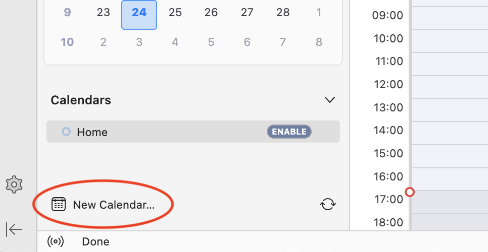
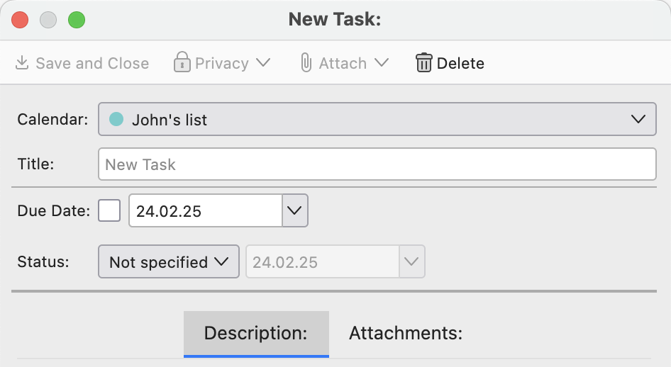

Provider for Google Calendar
Welcome to the beta version of the Provider for Google Calendar. Thank you for helping me move across the finish line, and helping to resolve any remaining issues before they affect so many other people.
Get started: Re-subscribe to your calendars
The final version will have a migration step to take care of this, but for now you'll need to re-subscribe to all your Google Calendars. The internal calendar type identifier needs to be different in the new version, so your other calendars will appear as if they are not supported.
Testing Plan
A good starting point from there is the testing plan originally written for the legacy version of this add-on. It roughly contains all the things you can do with this add-on. The new version should behave roughly the same, though there may be some tweaks on the UX. There are certain aspects that should actually work better, such as dismissing alarms on meetings.
You can find the testing plan on the github repository. Before you start, enable debugging.
Event dialog: more changes to come
Thunderbird doesn't have a built-in calendar API as of current. This add-on will be the start for changing that. Together with the add-on rewrite, I've also written a calendar experiment API that other add-on developers can make use of. It will eventually be part of Thunderbird itself.
One downside of the Web/MailExtensions API is that it isn't quite as flexible in the user interface. There should only be a few defined entry points. Customizing the event dialog to wrap an API around it has proven to be difficult as an experiment, and should likely be handled in the application itself.
So for now, the event dialog is still fully customized using the legacy code. There shouldn't be an impact to you as a user, but if you notice that the event dialog is not working it may be related to this.
Once I have mockups or implementation of the new event dialog design, I'll keep you updated and make sure you have a chance to test and provide feedback.
Providing Feedback
Thank you for being a beta tester! There are a few ways to provide feedback:
- Join the discussion in the beta discussion category
- If you are sure there is a bug, file an issue
- If you know how to fix it, send a pull request to the
mainbranch